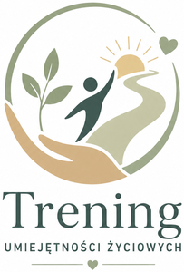
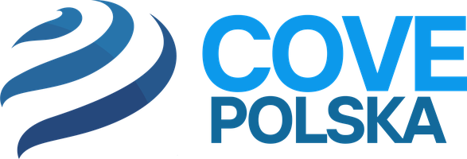
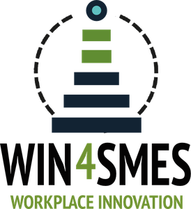

M3 / Lekcja 1. Karty OK i STOP
Wytnij karty do ćwiczenia „Linia na podłodze”. Sposób udzielania odpowiedzi ustala prowadzący; samo użycie kart nie zapewnia anonimowości. Wydrukuj jedną parę kart na uczestnika.
| OK | STOP |
|---|---|
| Zgadzam się / jest mi z tym dobrze. | Nie zgadzam się / stawiam granicę. |
Udział jest dobrowolny: możesz obserwować, czytać rolę lub zrobić przerwę. Ćwiczymy na wymyślonych sytuacjach. Bez dotykania, zabierania rzeczy i wyzwisk wobec uczestników. Po scence powiedz: „Wychodzę z roli”.
M3 / Lekcja 2. Zdarta płyta
Udział jest dobrowolny: możesz obserwować, czytać rolę lub zrobić przerwę. Ćwiczymy na wymyślonych sytuacjach. Bez dotykania, zabierania rzeczy i wyzwisk wobec uczestników. Po scence powiedz: „Wychodzę z roli”.
Powtarzaj prosty, jasny komunikat odmowny. Nie musisz nadmiernie uzasadniać swojego stanowiska.
Przykład: pożyczanie sprzętu
Osoba naciskająca: „Pożycz mi nożyczki, nóż albo miarkę. Tylko na chwilę, zaraz oddam”.
Ty: „Nie, nie pożyczam swoich narzędzi”.
Osoba naciskająca: „Jesteśmy przecież kumplami z grupy. Nic się z tym nie stanie”.
Ty: „Rozumiem, ale nie pożyczam swoich narzędzi”.
Osoba naciskająca: „Mistrz zaraz przyjdzie, muszę to zrobić teraz!”.
Ty: „To rzeczywiście problem, ale nie pożyczam swoich narzędzi”.
Zasady
Używaj tego samego zdania lub bliskiego wariantu. Wybierz komfortowy sposób komunikacji; kontakt wzrokowy nie jest wymagany. Nie musisz przepraszać za stawianie granic. Nie przekazujemy prawdziwych narzędzi podczas scenki.
Scenki do omówienia lub odegrania
Udział jest dobrowolny: możesz obserwować, czytać rolę lub zrobić przerwę. Ćwiczymy na wymyślonych sytuacjach. Bez dotykania, zabierania rzeczy i wyzwisk wobec uczestników. Po scence powiedz: „Wychodzę z roli”.
M3 / Lekcja 2. Presja na przerwie
A. Naciskający: namawiasz współpracownika na e-papierosa na zapleczu w czasie pracy, gdy kierownik nie patrzy.
B. Odmawiający: nie chcesz wychodzić. Powtarzaj krótką odmowę techniką „Zdarta płyta”.
Wskazówka: Powtarzaj stanowisko bez nadmiernego usprawiedliwiania.
M3 / Lekcja 2. Stanowisko pracy
A. Naciskający: namawiasz kolegę, by zostawił nieposprzątane stanowisko i nie mył naczyń lub narzędzi, bo kolejna zmiana zrobi to za niego.
B. Odmawiający: odmawiasz i deklarujesz posprzątanie własnego miejsca.
Wskazówka: Dbaj o uzgodnione zasady pracy.
Scenki do omówienia lub odegrania
Udział jest dobrowolny: możesz obserwować, czytać rolę lub zrobić przerwę. Ćwiczymy na wymyślonych sytuacjach. Bez dotykania, zabierania rzeczy i wyzwisk wobec uczestników. Po scence powiedz: „Wychodzę z roli”.
M3 / Lekcja 2. Niebezpieczne polecenie
A. Przełożony: polecasz pracę na uszkodzonej maszynie lub sprzęcie bez zabezpieczeń. Mówisz: „Rób, nie dyskutuj!”.
B. Uczeń: odmawiasz niebezpiecznej czynności i zgłaszasz zagrożenie.
Wskazówka: Wyłącznie rozmowa: nie używamy sprzętu. Poproś o wsparcie prowadzącego.
M3 / Lekcja 2. Granice prywatności
A. Klient: zadajesz pytania o prywatne życie pracownika, kierujesz krępujące komplementy i prosisz o prywatny numer.
B. Pracownik: stawiasz jasną granicę i odmawiasz podania prywatnych danych.
Wskazówka: Treść ustalcie z prowadzącym. Możesz analizować opis zamiast odgrywać rolę.
Scenki do omówienia lub odegrania
Udział jest dobrowolny: możesz obserwować, czytać rolę lub zrobić przerwę. Ćwiczymy na wymyślonych sytuacjach. Bez dotykania, zabierania rzeczy i wyzwisk wobec uczestników. Po scence powiedz: „Wychodzę z roli”.
M3 / Lekcja 3. Winda bezpieczeństwa
A. Grupa: opisujesz sytuację wyśmiewania błędu ucznia i namawiania osoby B do dołączenia. Nie używaj rzeczywistych wyzwisk.
B. Obserwator: zatrzymujesz reakcję, liczysz w myśli do 3 i nie dołączasz do dokuczania. Możesz skupić się na spokojnym oddechu, jeśli to dla Ciebie komfortowe.
Wskazówka: Ćwicz zatrzymanie impulsu. Nie wyśmiewamy żadnego uczestnika.
M4 / Lekcja 1. Analiza trybików — łańcuch skutków (scenka)
A. Osoba niewykonująca zadania: nie przygotowujesz czystych naczyń lub narzędzi albo nie wprowadzasz towaru na czas; mówisz „to nic ważnego”.
B. Współpracownik: wyjaśniasz wpływ tej czynności na pracę zespołu i klienta.
Wskazówka: Pokaż powiązania między rolami w kuchni, salonie lub sklepie.
Dofinansowane przez Unię Europejską. Poglądy i opinie wyrażone są jednak wyłącznie poglądami autora lub autorów i niekoniecznie odzwierciedlają poglądy Unii Europejskiej lub Europejskiej Agencji Wykonawczej ds. Edukacji i Kultury (EACEA). Unia Europejska ani EACEA nie ponoszą za nie odpowiedzialności. Materiał udostępniony na licencji CC BY 4.0 (creativecommons.org/licenses/by/4.0/deed.pl).